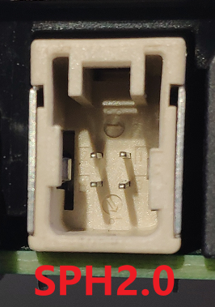
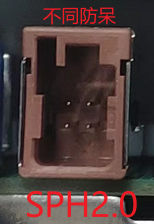
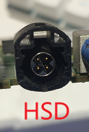
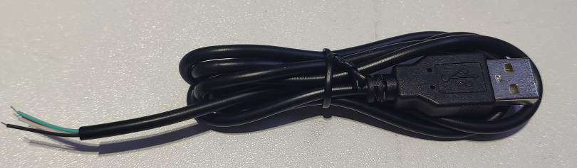
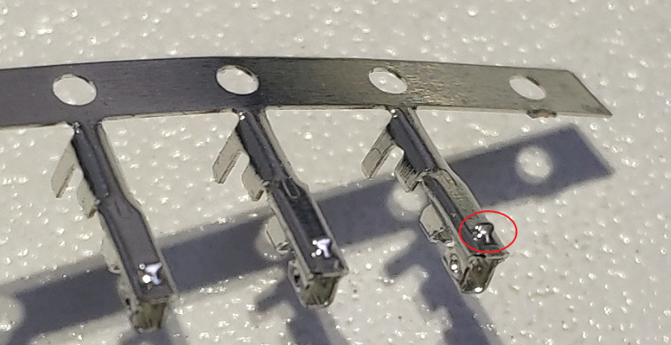
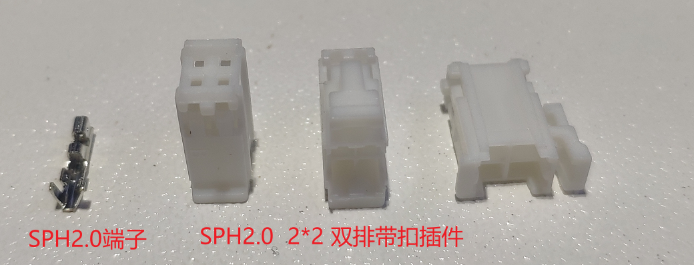
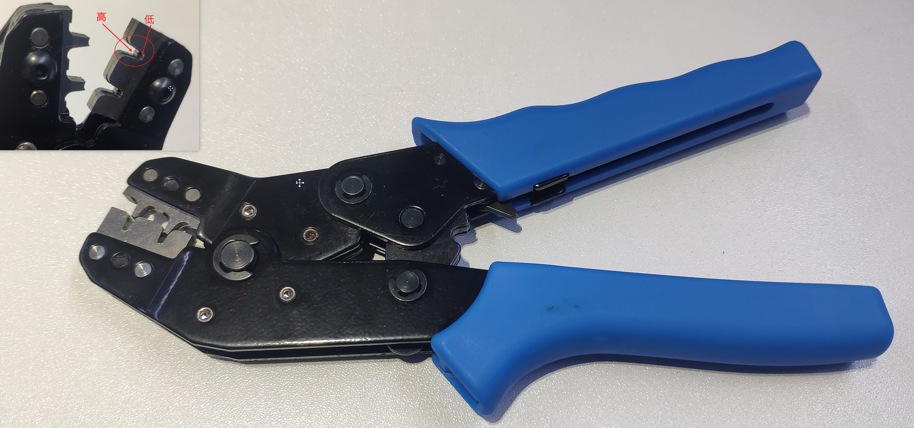
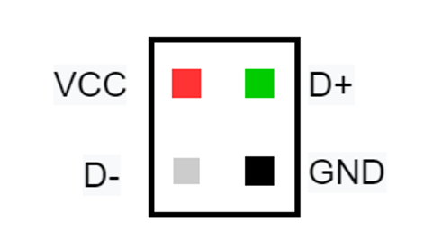

车联网安全基础知识之USB SPH2.0线束制作
车联网安全基础知识之USB SPH2.0线束制作
车机/TBOX使用的USB接口有好几个类型，不同车型的线序也可能存在差异。USB TYPE-A 双工头线相比搞车的必定人手一条。在对单个模块的测试中，此时只有双公头TYPE-A 是不行的，设备上的USB口是插针式的公头，此时我们就需要一些不太常见的USB公头转TYPE-A转接线。TBOX和车机上常见的USB接头有 SPH2.0、HSD等。这些异形的插头，在淘宝上买很难满足我们的需要(线序非标)，这时需要自己来做线束。
今天就和大家分享以下 USB 之 SPH2.0 接头的制作。HSD 的下次在分享。

虽然都是4个针脚但是他们的防呆设计有所不同，所以需要一个小的接插件适配不同防呆方案。接下来就是需要去找个这样一个接插件。
购买材料
看出了接口是方形的USB接口，但不知道这种接口叫做什么，于是在淘宝上找呀找，找了很久终于发现这种接口叫做 SPH2.0,其中2.0表示两个针脚的间距为 2.0mm。知道接口名称后，就方便了，买一些线束材料就可以自己按需制作了。需要用到的材料和工具如下。
4芯 USB 公头开口线，由于我们的目的是连接到电脑上，所以我们需要的是USB TYPE-A 开口线。使用TYPE-A 母头开口线也可以的，只是连接电脑的时候需要再连接一个USB TYPE-A 双公头开口线。

SPH2.0 2*2 双排带扣插件，USB接口为4针(2*2),带不带扣无所谓，买到的大部分都有，不影响使用，如果插不进去，可以直接用刀片去掉。

SPH2.0 端子，端子可以多买点比较便宜，刚开始做可以拿几个连接杜邦线试试手。

压线钳，用于SPH2.0 端子与USB公头开口线连接。

万用表，用来确定线序，还可以验证制作的转接线连接状态是否完好。
分析针脚定义
不同厂商的针脚定义可能不同，需要我们自己分析。首先最容易的找到的就是GND，使用万用表测试四个针脚与USB金属外壳的连通性，发出蜂鸣音量的就是GND。他的对角就是VCC(自己经验总结出来的)。剩下的就是D+ 和 D-，这两个可以看板子上的连接的芯片的引脚，很多的使用的BGA封装的不好测。还有一个简单粗暴的方法，就是D+和D-随便插，然后看电脑上的反应，看能不能识别出USB设备，如果不行就交换线序。如下是这次我需要做的线束定义，如果插错了也没关系，可以使用镊子或一字螺丝刀轻轻翘起卡扣，从SPH2.0双排带扣插件中拔出错误的SPH2.0端子，重新插入对应位置即可。

制作
- 取一个 SPH2.0 端子
- 压线钳凹面向下，左手拿端子，将端子开口朝向压线钳压线口凹面，端子与压线口右侧齐平
- 轻轻下压，端子微微变形
- 然后从右侧插入USB开口线，由于压线钳两侧一高一低，插入进去绝缘皮刚好顶到左边的一侧
- 继续下压，压好之后，压线钳自动弹起，取出即可
- 重复1-4将剩下的3个端子与USB开口线连接好
- 按照针脚定义将端子插入到SPH2.0 2*2 双排带扣插件中，需要注意的是端子凸起的地方需要朝外刚好与端子外侧卡住。
- 最后使用杜邦线公头顶一下端子，使端子与插件连接好。
做线束之前去网上搜了一圈教学视频，但没有找到。既然没有那就自己拍一个，以下是制作的讲解视频，第一次做视频还很生疏，有疑问的私信联系。